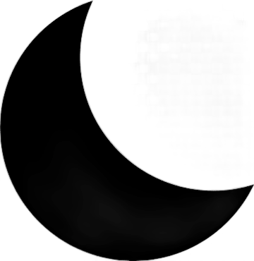

Potato
Enlaces Sociales
Navegación Principal
Sobre mí
Proyectos
Contacto
Hola, soy Potato
Stoic, video editor, and chess player.

X
Tu navegador no soporta el elemento de video.
X
Tu navegador no soporta el elemento de video.